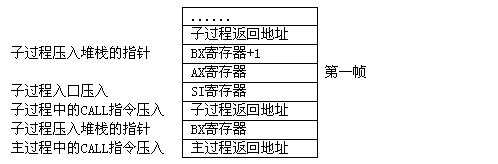

我们来讨论最后一个问题：如何在一个字符串中间插入一个新字符串？
不知道大家能否独立地编制出一般方法的程序，笔者在下面给出了一个：
data segment
assume ds:data
string db The same is presented to all those who love sunshine',0dh,0ah,24h
buffer db 9 dup (?)
substrg db'sunshi ne',0
data ends
code segment
assume cs:code
main proc far
mov ax,data ；初始化DS寄存器指向数据段
mov ds,ax
mov dx,offset string ；显示源字符串
mov ah,9
int 21h
mov bx,9 ；在源字符串的第九个字符位置插入新串
call move_str ；调用MOVE_STR子过程空出新串的位置
int 21h ；显示源字符串
mov bx,offset substrg ；BX寄存器指向将插入的子串
mov di,9 ；DI寄存器指向插入点
call insert_str ；调用INSERT_STR将子串插入源串
int 21h ；显示处理后的字符串
mov ah,4ch ；结束程序
int 21h
main endp
move_str proc near ；MOVE_STR子过程
push si ；保存SI寄存器
push ax ；保存AX寄存器
mov si,offset string ；SI寄存器指向源字符串
add si,bx ；计算字符串的分离点
cmp byte ptr [si],'$' ；分离点是字符串结尾吗？
jnz not_end ；若不是结尾转NOT_END
mov al,byte ptr [si] ；取得最后的'$'字符
mov byte ptr [si+8],al ；将此字符后移8个字节
jmp return ；返回主过程
not_end:
push bx ；BX寄存器压入堆栈
inc bx ；BX寄存器加1
call move_str ；递归调用自身
pop bx ；取回BX寄存器
mov al,byte ptr [bx] ；取得BX寄存器指向的字符
mov byte ptr [bx+8],al ；将此字符后移8个字节
return:
pop ax ；恢复AX寄存器
pop si ；恢复SI寄存器
ret ；返回主过程
move_str endp
insert_str proc near ；INSERT_STR子过程
push ax ；保存AX寄存器
insert_loop:
cmp byte ptr [bx],0 ；BX寄存器指向子串末尾了吗？
jz quit ；若BX指向子串末尾则返回主程序
mov al,byte ptr [bx] ；取得BX寄存器指向的字符
mov byte ptr [di],al ；存入DI寄存器指向的位置
inc bx ；BX寄存器指向子串中下一个字符
inc di ；DI寄存器指向源串中下一个位置
jmp insert_loop ；插入下一个字符
quit:
pop ax ；恢复AX寄存器
ret ；返回主过程
insert_s endp
code ends
end main
解决这个问题的一般思路是这样的：首先将插入点后面的字符串向后移动8字节距离，为"SUNSHINE"空出位置，然后将"SUNSHINE"分8个字节移入插入点。程序中的"MOVE_STR"子过程就是用于移动插入点后面的字符串的，在这个子过程中我们特别采用了"递归"算法，图5－4给出的部分堆栈的情况。INSERT＿STR子过程用于将子串移动到插入点位置，从而完成了最终的插入工作。

可见这个问题的核心是两次将字符串移动位置。我们刚刚学过CMPS指令，它可以直接比较在存储器中的两串数据，那么有没有串指令可以直接在内存中移动数据串呢？
回答是肯定的。请看程序INSSTR1.ASM：
data segment
assume ds:data
string db 'The sa me is presented to all those who love sunshine',0dh,0ah,24h
buffer db 9 dup (?)
substrg db 'sunshi ne'
data ends
code segment
assume cs:code
main proc far
mov ax,data ；初始化DS寄存器
mov ds,ax
mov dx,offset string ；DX寄存器指向字符串STRING
mov ah,9 ；显示字符串
int 21h
mov bx,8 ；BX寄存器设置字符串中间空出的字符数
call move_str ；调用MOVE_STR子过程分离字符串
int 21h ；显示分离后的字符串
mov bx,offset substrg ；BX寄存器指向子串
mov di,9 ；DI寄存器设置插入点
call insert_str ；调用INSERT_STR子过程插入子串
int 21h ；显示完整的字符串
mov ah,4ch ；结束程序
int 21h
main endp
move_str proc near ；MOVE_STR子过程
push ax ；保存将要使用的寄存器
push cx
push si
push di
push es
mov ax,data ；设置ES寄存器指向数据段
mov es,ax
mov si,offset string+55 ；SI寄存器指向源字符串末尾
mov di,si
add di,bx ；DI寄存器指向源串末尾后第八个字节处
mov cx,47 ；移动47个字符
std ；设置移动方向为从后向前
rep movsb ；移动字符
pop es ；恢复入口处保存的寄存器
pop di
pop si
pop cx
pop ax
ret ；返回主过程
move_str endp
insert_str proc near ；INSERT_STR子过程
push ax ；保存将要使用的寄存器
push cx
push si
push di
push es
mov ax,data ；设置ES寄存器指向数据段
mov es,ax
mov si,bx ；SI寄存器指向待插入的子串
add di,offset string ；DI寄存器指向源串中的插入点
mov cx,8 ；移动的字符数送入CX寄存器
cld ；设置移动方向为从前向后
rep movsb ；移动8个字符
pop es ；恢复入口处保存的寄存器
pop di
pop si
pop cx
pop ax
ret ；返回主过程
insert_str endp
code ends
end main
新增的MOVS指令就是直接在存储器中移动数据的一个串处理指令：
助记符：MOVS（Move String）
用 途：在内存中直接移动成串数据
格 式：MOVSB（移动一字节）
MOVSW（移动一个字）
执 行：将DS：SI处的一个字节（或字）直接传送到ES：DI处，同时SI，DI寄存器根据DF的状态相应增减。
这个指令无论从形式上看还是从执行的操作上看都没有更多值得深入讨论的。只有一点需要注意，这个指令实际执行一种"COPY"的操作，数据串移动到另一个位置后，原位置的数据依然存在，这可以从上面程序的输出结果上看出来。
通过这么多实际问题我们可以看出，很多串处理指令只有和REP前缀联合应用才能真正处理数据串，单独应用的串指令目前只有一个--LODS。其实LODS也可以加上REP前缀，只是我还没有发现这样应用LODS指令有什么实用价值。我曾在程序中写出过REP PUSH AX这样的指令，竟然也能编译通过，不过用DEBUG跟踪执行这样的指令时并未发生想象中的所谓"连续压栈"所操作，大家可以试一下，看看究竟会发生什么。
问题已经讨论完了，但串处理指令还有一个没有说到，笔者特意将此指令保留到最后，目的是想借着讨论这个指令之机为即将开始的新一章打一个伏笔。这最后一个串指令就是和LODS相对的指令--STOS:
助记符：STOS（Store in to string）
用 途：成串存入数据
格 式：STOSB（存入一字节）
STOSW（存入一个字）
执 行：将累加器中的数据存入ES：DI指向的内存单元，同时DI寄存器根据DF的状态相应增减。
例程DISPSTR.ASM序说明这个指令的用法：
data segment
assume ds:data
string db 'The sa me sunshine is presente d to all those who love sunshine',0
data ends
code segment
assume cs:code
main proc far
mov ax,data ；初始化DS寄存器
mov ds,ax
mov ax,0b800h ；ES寄存器置入段地址0B800H
mov es,ax
mov di,0 ；DI寄存器清0
mov ax,0720h ；AX寄存器置入0720H
mov cx,2048 ；处理2048个字
cld ；设置DF标志
rep stosw ；将0720H写入ES:DI指向的内存单元
mov si,offset string ；SI寄存器指向字符串STRING
mov di,160*10+16 ；设置DI寄存器
mov ah,2 ；AH寄存器送入2
disploop:
lodsb ；取得一个字符
or al,al ；是0吗？
jz exit ；是0，结束程序
stosw ；将字符连同AH中的02H一同写入内存
jmp disploop ；处理下一个字符
exit:
mov ah,4ch ；结束程序
int 21h
main endp
code ends
end main
这个程序将一个字符串传送到0B800:1616处，每两个字符之间有一个数据02H。再传送字符串数据之前，程序先在0B800:0处开始的4KB存储器中填了一串"0720H"。用DEBUG跟踪这个程序，注意比较一下有REP前缀的STOS指令与没有前缀的STOS有何不同。
此程序的输出结果很吸引人，如果显示器上满是文字，那么执行这个程序后显示器上的杂乱信息将被一扫而光，同时屏幕上会出现一行文字，可不要被久违了的彩色惊呆了哟。
这个程序只是向内存中的一个特定位置存放了一些数据，为什么屏幕上会出现彩色的文字？文字的位置和ES:DI中的地址有关系吗？每两个ASCII码之间的数字02H又是什么呢？所有这些问题将在下一章详细地讨论。
到这一章为止我们已经了解了8086/88所有的寄存器，这一章的要点有以下这样几点：
（1）子过程数据传递的一般方式；
（2）特殊的子过程；
（3）串处理指令的特性；
（4）8086/88的所有寄存器的特点及应用。
再次提醒大家注意，汇编语言与操作系统及硬件的关系十分密切，如果不能将这三者好好结合起来无论如何是无法掌握汇编语言的。